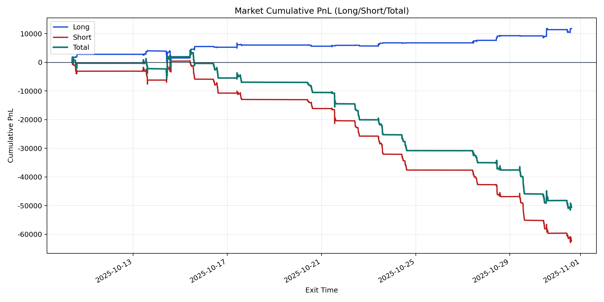
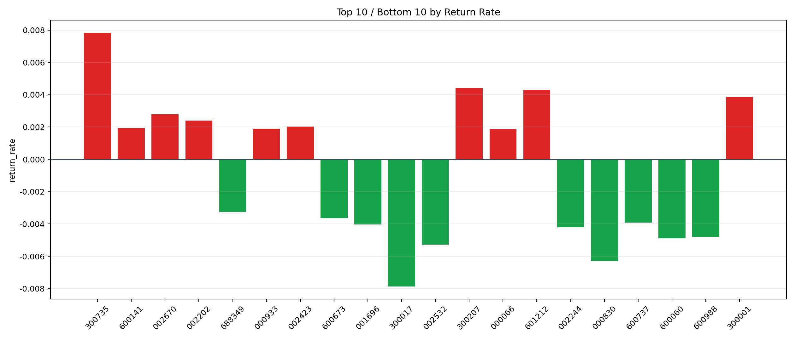

| repo_root | /home/haoranyou/data/output/alpha0.4_1w_5s_3ticks_index_filter/index_weights_500 |
|---|---|
| period_months | 1 |
| period_label | 2025-10-10_to_2025-10-31 |
| start_time | 2025-10-10 09:50:32 |
| end_time | 2025-10-31 14:45:02 |
| n_trades | 8472 |
| n_symbols | 101 |
| total_pnl | -50567.616549999984 |
| long_total_pnl | 11796.986949999982 |
| short_total_pnl | -62364.60349999996 |
| total_entry_notional | 79337068.0 |
| long_entry_notional | 14765821.0 |
| short_entry_notional | 64571247.0 |
| total_return_rate | -0.0006373769263820033 |
| long_return_rate | 0.000798938775568252 |
| short_return_rate | -0.0009658262213830246 |
| top_symbols_by_return | ["300735", "300207", "601212", "300001", "002670", "002202", "002423", "600141", "000933", "000066"] |
| bottom_symbols_by_return | ["300017", "000830", "002532", "600060", "600988", "002244", "001696", "600737", "600673", "688349"] |

